从 VLA、WAM 到具身智能体：LLM 后训练与 MoE 路由向具身迁移的四条路径
围绕反应式 VLA、世界-动作模型（WAM）与智能体执行框架三类主流具身基座，梳理 2025–2026 年间交互轨迹进化、动态 Rubric 协同演化、免梯度测试时强化学习以及混合专家与多智能体架构的核心目标、共性挑战、代表作机制与选型边界。
0. 三类主流具身基座及其固有瓶颈
基座演进目标：将互联网图文语义先验、大规模人类操作视频的物理动力学先验以及高层代码推理能力转化为高频闭环机器人控制策略。
共性瓶颈：无论底层依赖 VLM、视频扩散模型还是外接多轮工具框架，纯离线模仿学习或零样本冻结调用在长视距、强扰动操作中都会因误差累积而偏离专家分布，亟需引入在线交互后训练与条件化专家路由。
当前机器人操作基座模型沿三条主流路线并行演进，各自依托不同的预训练先验，也暴露出互补的能力短板：
1. 反应式 VLA（Reactive VLA）：以互联网图文预训练 VLM 为主干，代表工作包括 、 与 OpenVLA。如图 1 所示， 将预训练 VLM（SigLIP + Gemma）与 300M 流匹配动作专家连接，输入当前多视角图像 、语言指令 与本体关节状态 ，以约 50 Hz 频率去噪生成未来 步动作块 。图文基座赋予其较强的开放词汇与空间指代理解能力，但静态图文预训练并未显式建模三维物理状态随动作的连续转移，面对陌生接触动力学或局部遮挡时泛化受限。
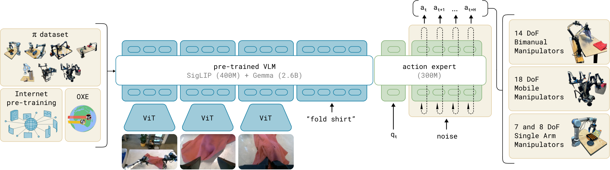
2. 世界-动作模型（World-Action Model, WAM）：以大规模视频扩散模型为主干，代表工作包括 DreamZero、WorldVLA、Fast-WAM 与 Faster-WAM。如图 2 所示，WAM 在视频扩散 Transformer（Video DiT）中耦合未来视觉帧预测与连续动作去噪，能够直接从海量无动作标注的人类操作视频中吸收接触与柔性体运动先验；DreamZero 在未见操作任务上的零样本成功率较反应式 VLA 提升一倍以上。WAM 的核心局限有两处：一是测试期若每步显式去噪生成未来视频帧，机载延迟较高，14B DreamZero 经系统优化后约为 7 Hz，而 Fast-WAM 证明训练期保留视频预测辅助表征学习、测试期跳过未来帧生成仅提取单步视觉 KV 可在维持精度的同时提速 4 倍以上；二是数秒尺度的视频预测并不包含跨阶段子任务逻辑，一旦抓空或滑脱仍缺乏高层重规划机制。
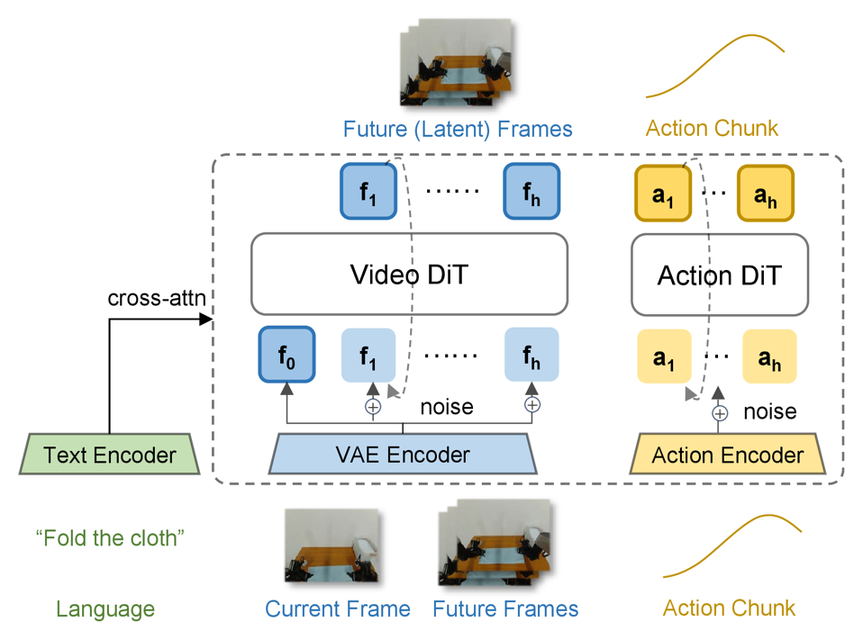
3. 智能体规划器加机器人执行框架（Agentic Planner + Robot Harness）：代表工作包括 Harness VLA (RPent) 与 CaP-X。如图 3 所示，底层将预训练 VLA 或 WAM 封装为可调用技能原语 VLA_ACT，与三维分割、点云反投影、解析运动控制 MOVE_TO 组成原语库；上层 VLM 规划器以 0.5–2 Hz 频率多轮观测反馈、调度原语或合成控制代码。该结构补齐了长程任务分解与失败重试，但高度依赖昂贵闭源旗舰模型，且高层符号接口与底层高频控制之间存在几何信息折损。
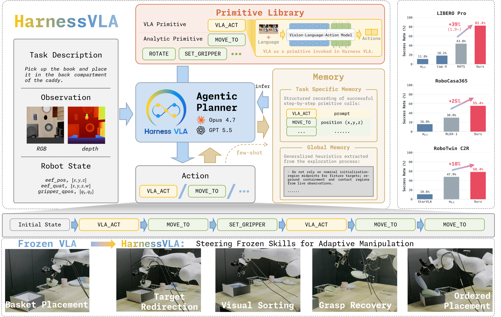
为突破上述三类基座在离线模仿与冻结调用下的分布偏移瓶颈，2025–2026 年的研究将大语言模型的后训练与稀疏架构系统迁入具身领域，形成四个递进演进方向：交互轨迹进化、动态 Rubric 协同进化、经验复用与测试时强化学习以及混合专家（MoE）与多智能体系统。
1. 交互轨迹进化（Trajectory Evolution）
总体核心目标：突破离线专家演示“只含一次成功顺滑路径”的分布局限，使具身模型在闭环环境试错中习得偏差自恢复、同款干扰物消歧以及超越演示的快捷操作轨迹。
共性挑战：① 物理交互慢且异构机器人框架在运行期主动裁剪历史图像，造成离线重拼提示词与推理期真实输入错位；② 长程多步任务终局二值奖励稀疏，存在步级信用分配失准；③ 底层流匹配连续动作模型属于确定性常微分方程，无显式概率密度供策略梯度直接求导。
分支路径差异：上层规划分支冻结底层执行器，优化离散多轮工具调度与关键错步自蒸馏；底层流匹配分支改造去噪采样链或构造代理似然比，直接强化 50 Hz 连续控制；世界模型想象分支在 WAM 视频预测画面中开展在策强化以替代昂贵真机采样。
1.1 代表作解析：AgenticRoboRL (arXiv:2610.28589)
AgenticRoboRL（Liu et al., 2026）面向“智能体规划器 + 执行框架”主线，固定底层感知与 VLA 执行器，构建跨异构框架的上层规划器后训练管线。不挂载任何外部记忆的开源 Qwen3.5-9B 经此训练后，在 LIBERO-PRO（800 个位置交换与指令扰动回合）上的成功率从 18.1% 提升至 71.0%，逼近挂载外部记忆的闭源 Codex GPT-5.5（72.1%）。
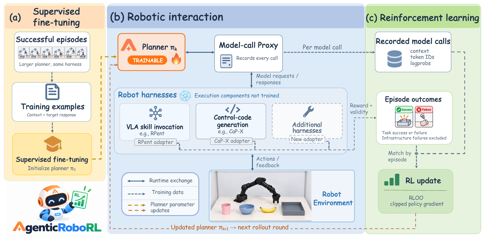
-
模型调用边界代理（Model-call Proxy，图 4b）：异构执行框架有的输出 JSON 原语、有的生成 Python 代码，且每轮动态裁剪早期图像以节省显存。AgenticRoboRL 将训练拦截点设在模型推理服务边界，原样记录每轮到达时的实际输入 Token 序列 、输出响应 及采样端对数概率 ；若训练器重渲染结果与录制序列不一致则置零权重，消除训推上下文错位。接入新框架仅需轻量适配器输出任务 ID、初始种子、尝试序号、终局 0/1 奖励与区分仿真崩溃的
valid标记。 - 去记忆依赖改写蒸馏（Rewrite-and-Filter SFT，图 4a）：27B 教师模型挂载外部记忆采集成功轨迹，而 9B 学生模型部署时不挂记忆。若直接用教师原文微调，学生会在无记忆输入时幻觉出对记忆库的引用。作者离线剥离记忆读取调用，定位思维链中复现记忆内容的语句，在保持工具参数不变的前提下改写为仅基于当前视觉观测的推理并做判别过滤，使 SFT 成功率达到 65.1%，显著优于直接掩码丢弃相关轮次的 55.2%。
- 留一法组优势多轮 PPO（图 4c）：对同一“任务 + 初始状态”组采样 条多轮轨迹，省去独立价值网络，由终局二值奖励 计算留一法相对优势（RLOO），并通过截断重要性权重修正采样引擎与训练引擎的数值偏差：
其中 为当前策略概率， 为本轮起始权重重算概率， 为采样端记录概率，截断上限 。训练后的 9B 规划器学会主动调用点云反投影对比三维欧氏距离以区分同款干扰物，零样本迁移至 10,030 个多维扰动回合（LIBERO-Plus）取得 72.2% 成功率。
1.2 同方向分支工作演进
围绕整条轨迹共享单一标量优势的粒度粗糙问题，以及底层连续执行器冻结的物理上限，同方向工作在三条分支上推进：
- 分支 A · 上层多步规划的关键错步归因与冗余剪枝：失败轨迹的前半段定位往往正确，成功轨迹中也常混入无效往返步，全局挂载事后总结做自蒸馏会在正常步引入干扰。SCOPE（图 5）训练分析器定位关键错误步，仅在掩码选中的错步生成步级技能并执行有界双侧在线自蒸馏，同时引入长度对比奖励压缩交互轮数。TrajEvolve（NeurIPS 2026）利用环境回放对历史轨迹做反事实剪枝以剔除冗余探索步；GiGPO 通过聚类跨轨迹重复访问的锚点状态计算步级微优势；具身侧 VAGEN 则要求 VLM 每轮预测动作后的下一帧状态，用双层 GAE 同时约束单轮空间感知与长程回报。
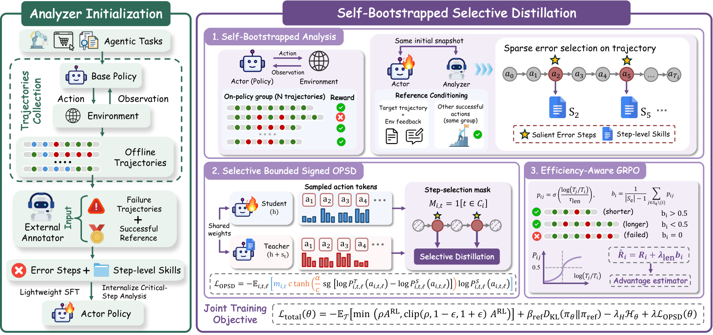
- 分支 B · 底层 50 Hz 连续动作流匹配的在线强化：对于离散动作 Token VLA，SimpleVLA-RL（ICLR 2026）与 RLinf-VLA（RSS 2026）通过渲染-推理-训练流水线并行扩展在线 GRPO，仅凭 0/1 结果奖励便涌现出以推动代替抓取搬运的高效“推切”轨迹。针对 类确定性流匹配策略 无显式对数似然的难题，近期形成三种代表性解法：（1）ReinFlow（NeurIPS 2025，图 6）与 Flow-GRPO 并联状态条件化可学习噪声网络 ，将确定性去噪步转为高斯马尔可夫转移以求取精确对数似然做 PPO 更新，部署期移除噪声恢复平滑控制；（2）FPO 与 FPO++ 不改动确定性采样，直接用新旧策略条件流匹配损失差值的指数 构造代理似然比；（3）Physical Intelligence 的 (RECAP) 训练分布式价值网络评估真机自主轨迹与人工纠偏轨迹的步级优势，将其二值化为条件指示符 注入流匹配回归损失，避开高方差策略梯度，使真机意式咖啡制作与折纸箱失败率减半。
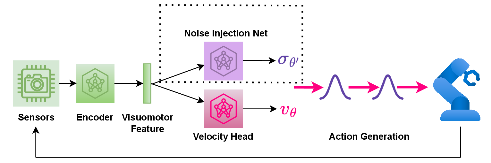
- 分支 C · 基于 WAM 与世界模型想象画面的低损耗采样：为减少真机磨损与物理仿真耗时，WMPO 训练与策略视觉表征对齐的像素级具身世界模型，让 VLA 在想象视频轨迹中执行在策 GRPO；DreamPlan 同样利用视频世界模型替代仿真环境对高层视觉规划器开展强化微调。
| 方法与链接 | 所属分支 | 相比基线的核心机制 | 代表性收益与能力边界 |
|---|---|---|---|
| AgenticRoboRL | 上层 9B 规划器 | 模型调用边界 Proxy 拦截真实上下文；去记忆改写 SFT + 留一法多轮 PPO | LIBERO-PRO 18.1% 71.0%；十步长任务受限于终局 0/1 稀疏奖励 |
| SCOPE & TrajEvolve | 上层多步规划轨迹 | SCOPE 掩码定位关键错步做有界自蒸馏；TrajEvolve 利用环境回放剪除冗余步 | 消除全局事后提示对正常步的偏置干扰，显著缩短交互轮数 |
| SimpleVLA-RL & RLinf-VLA | 底层 VLA 在线强化 | 渲染-推理-训练流水线并行架构支撑大规模在线 GRPO | 训练吞吐提升超 2 倍，自主探索出演示集外的“推切”快捷轨迹 |
| ReinFlow & FPO | 底层连续流匹配 | ReinFlow 注入状态条件可学习噪声求精确似然；FPO 用流匹配损失差构造代理比率 | 解决确定性流匹配 ODE 无显式概率密度的策略梯度计算障碍 |
| (RECAP) | 底层真机流匹配 | 分布式价值网络估计步优势并二值化为条件指示符 ，融合人工纠偏迭代回归 | 稳定扩展至真机长程灵巧操作，制作咖啡与折纸箱失败率减半 |
| WMPO & DreamPlan | 世界模型想象采样 | 在像素/视频世界模型预测的想象画面中执行 VLA 或规划器的在线 GRPO | 大幅降低真机与仿真采样损耗；受限于长视距视频预测的物理保真度 |
2. 动态 Rubric 与过程奖励协同进化（Rubric Co-evolution）
总体核心目标：为多阶段长视距任务构建随策略能力同步演化的稠密过程归因信号，在同组终局全零时提供有效探索梯度，同时抑制策略对固定打分器的投机刷分。
共性挑战：① 能力失配与满分饱和——静态评分准则在训练初期过难导致全零，中后期被掌握后恒得满分而丧失组内方差；② 多模态过程刷分——策略极易停留在高进度分的半空悬停姿态或利用相机遮挡骗取视觉奖励；③ 多步操作缺乏人工逐帧标注的中间过程真值。
分支路径差异：LLM 在线准则协同演化分支在训练闭环中动态校准准则难度、施加终局分解和约束并挖掘投机负项；具身物理进度塑形分支聚焦跨视角视觉进度建模与策略不变势函数差分，但目前仍采用离线预训练后冻结的静态范式。
2.1 代表作解析：CoCA (arXiv:2610.38566)
在 AgenticRoboRL 中，短程任务成功率达 86%–96%，但十阶段长任务 LIBERO-10 仅为 39%–41%，CaP-X Spatial 仅为 0%–6%：一旦同组采样终局全部失败（），相对优势恒为零。CoCA（Co-Evolving Policy and Rubric via Capability Awareness）（Zhang et al., 2026）通过单条准则粒度的能力探测，将评分准则校准与策略更新耦合成在线闭环（图 7）。
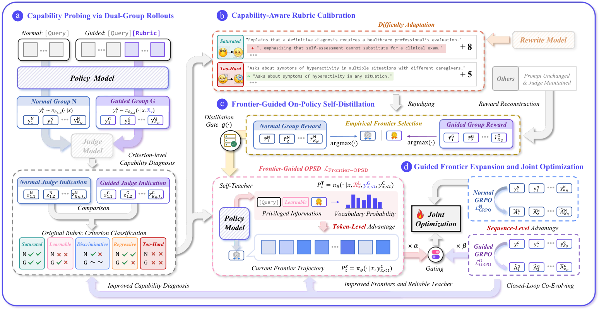
-
双组采样能力探测（图 7a）：对输入 与当前加权准则集合 ，并行采样无提示组 与带准则提示组 。对比两组逐条达标率 即可定位准则状态： 属已掌握饱和项（
Saturated）； 属超纲过难项（Too-Hard）； 则是无提示做不出、给提示能做对的能力前沿项（Learnable）。 -
准则难度动态校准与前沿门控在线自蒸馏（图 7b–d）：改写模型自动收紧饱和项约束并拆解过难项。针对诊断出的
Learnable前沿准则，模型共享同一套参数分饰自教师与学生两角——自教师额外可见特权准则与优胜引导响应 ，在学生自身采样的前缀 上逐 Token 最小化前向 KL 散度，将特权准则引导能力内化回无提示策略：
2.2 同方向分支工作与具身过程奖励对照
- 分支 A · 终局分解一致性与对抗防刷分（LLM Agent 侧）：为免除人工中间步标注，ARCO（图 8）在共享主干上挂载步级准则生成头与打分头，直接施加轨迹分解约束 ，强制整条轨迹各步准则得分之和对齐真实环境的终局 0/1 结果，同步训练策略 与准则网络 。EvoRubrics（EMNLP 2026）与 OnlineRubrics 每轮对比新旧策略轨迹挖掘新出现的投机行为并增补负向扣分项；RLCER 让单模型自生成准则监督思维链；ARISE-RL 进一步要求准则判据绑定真实工具返回观测。
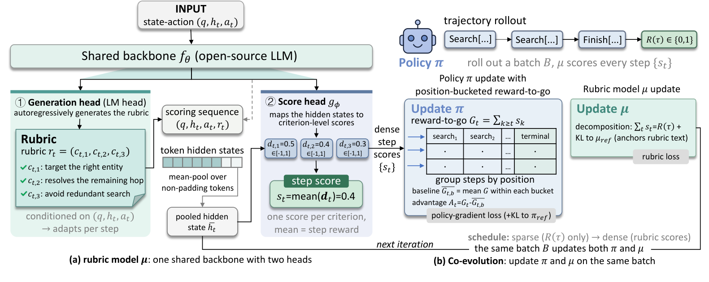
- 分支 B · 具身物理进度塑形及其静态局限：具身侧近期代表作包括 Robo-Dopamine / 2.0（CVPR 2026，图 9）、RoboReward、Robometer 与 ProcVLM。Robo-Dopamine 指出直接累加状态进度分 会诱导机械臂停留在目标正上方持续骗分，据此引入策略不变势函数差分塑形 ；RoboReward 则通过反事实视觉编辑与视频截断构造“近似成功”困难负样本，训练 4B/8B 视觉打分器输出 1–5 级离散评分。然而现有具身过程奖励模型均在离线预训练后完全冻结，尚未接入 CoCA 与 ARCO 的在线演化闭环。
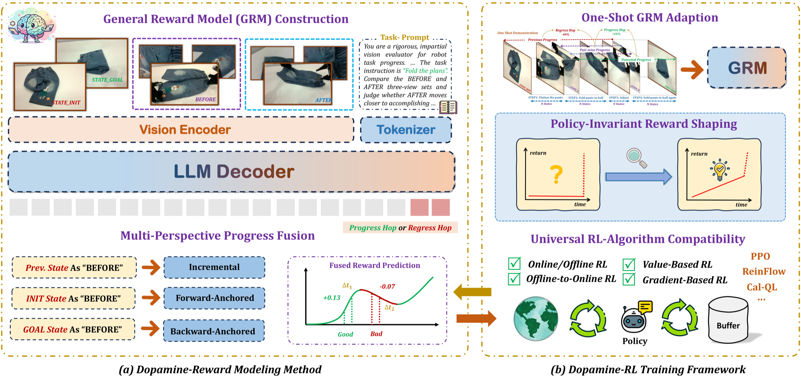
| 方法与链接 | 所属分支 | 核心约束与训练机制 | 解决的关键矛盾与局限 |
|---|---|---|---|
| CoCA | 在线准则校准 | 双组采样探测准则饱和度，动态调整难度并执行前沿门控在线自蒸馏 | 解决训练前后期准则过难或满分饱和问题；尚未结合连续物理观测 |
| ARCO & EvoRubrics | 在线分解与防刷分 | ARCO 约束步得分总和对齐终局 ；EvoRubrics 对抗挖掘策略新漏洞 | 免除人工中间步真值标注，动态封堵交互过程中的投机刷分 |
| Robo-Dopamine / 2.0 | 具身静态进度塑形 | 三视角融合视觉进度预测 + 势函数差分塑形 | 从理论上消除半空悬停骗分激励；打分模型冻结不随策略在线更新 |
| RoboReward & Robometer | 具身跨本体评分器 | 反事实重标注与百万级失败帧跨轨迹偏好对比 | 跨本体泛化好；静态离散等级在精细长程装配上缺乏针对性负向判据 |
3. 经验复用与测试时强化学习（Experience Reuse & Test-Time RL）
总体核心目标：在冻结主干网络权重、不执行梯度反向传播的前提下，利用部署现场刚积累的少量成败轨迹即时修正后续决策分布，实现低成本单样本环境适应。
共性挑战：① 朴素拼接文本反思或多段历史视频会导致多模态 KV-Cache 急剧膨胀，拖慢机载控制周期并引入文字幻觉；② 静态向量余弦相似度检索出的历史轨迹未必带来正任务收益；③ 高层离散原语调度与底层 50 Hz 连续控制所需的记忆表征形态截然不同。
分支路径差异：输出分布闭式调制分支检索近邻回报直接平移输出层 Logits，实现零上下文膨胀；多模态与收益对齐检索分支通过分层视频树局部重入或软 Q 检索器为高层规划补齐接触细节；循环快速权重分支在底层连续策略内每步更新轻量快速权重，以恒定耗时压缩数千步历史。
3.1 代表作解析：JitRL (arXiv:2601.18510, ICML 2026 Spotlight)
JitRL（Just-In-Time Reinforcement Learning）（Li et al., 2026）省去参数反向传播，将动态非参数记忆库直接转化为测试时的闭式输出对数概率偏置（图 10）。
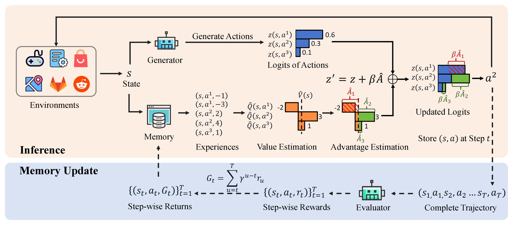
- 结构化状态抽象与步回报记忆（图 10 下）：每局结束后，评估器为轨迹赋予步级贡献分 ，计算折扣回报 ，并将原始观测压缩为去噪语义状态，以三元组 实时写入记忆库 。
- 近邻优势估计与 KL 约束闭式 Logits 更新（图 10 上）：推理至状态 时，检索 Top- 近邻集合 ，由状态均值 与动作匹配均值 估计经验优势 。求解相对于冻结先验 的 KL 正则化策略优化目标，其最优解在对数概率空间严格等价于加性平移：
如图 10 所示，冻结先验原本偏好动作 ，叠加历史负优势偏置后无需修改任何参数或拉长输入提示词即切换至高回报动作 。在 WebArena-Lite 连续在线适应评测中，JitRL 达到 60.0% 成功率，反超 Llama-3.1-70B 参数微调基线 WebRL（46.1%），算力开销降低 30 倍以上。
3.2 同方向分支工作演进
-
分支 A · 具身分层文本记忆与按需视频树重入：Harness VLA (RPent) 维护全局启发式、任务族经验与单任务配方三层文本记忆，配旗舰模型在 LIBERO-PRO 达 82.4%；Don't Drop the Baton 专门存储相邻子任务交接处的空间放置边界条件。针对纯文本难以刻画三维接近倾角与夹爪闭合时机的问题，RV-ICL（图 11）将单条无标注演示视频离线构建为四层树，规划初期仅读取轻量的 事件摘要，执行到精细接触子目标前才通过
re-enter回路按需调入对应的 20 帧 接触视频片段，在 LIBERO-PRO 上将高配规划器推至 96.5%。
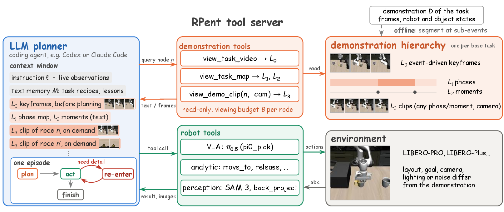
re-enter 回路按需读取局部短视频。
- 分支 B · 收益对齐的神经案例检索与训练期高价值回放：为避免余弦相似度检索出无关历史，Memento（图 12）冻结底层大模型，利用环境真实回报通过软 Q 学习在线更新案例读取策略 ；面向纯黑盒接口的 Training-Free GRPO 则通过同组轨迹对比迭代提炼自然语言经验先验。在训练期经验复用侧，ExGRPO（ICLR 2026）按历史正确率分桶优先回放中等难度、低熵成功轨迹，节省约 40% 在线采样成本。
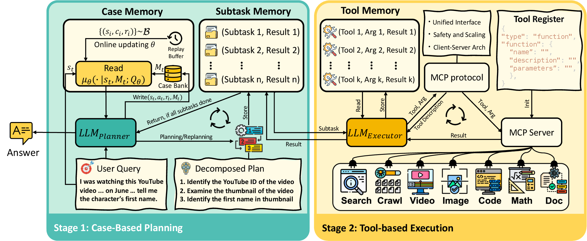
- 分支 C · 底层 50 Hz 连续策略的循环快速权重压缩：底层连续动作块无法做离散词表匹配，也不能每步重算几千帧历史注意力。RoboTTT（图 13）将跨时间步记忆交由两层 GeLU MLP 快速权重层承载：推理期主干冻结，每步沿自监督残差梯度更新内部快速权重 并向后传递，以恒定单步延迟压缩长达 8,000 步的非马尔可夫视觉运动历史；同类底层少样本上下文适应还包括演示片段检索微调的 RICL。
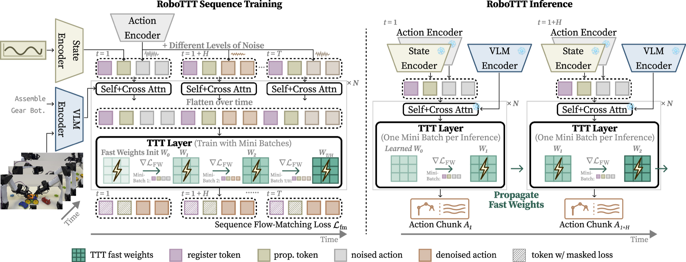
| 方法与链接 | 所属分支 | 测试时介入机制 | 核心收益与具身部署约束 |
|---|---|---|---|
| JitRL | 输出分布闭式调制 | 检索近邻步回报估计优势，闭式平移输出层 Logits | 成本较 RL 微调降 30 倍且零上下文膨胀；连续坐标需先抽象为离散原语 |
| RPent & RV-ICL | 分层记忆与视频树重入 | 高层规划器按需读取三层文本规则或 20 帧 局部接触视频 | 补齐三维接触细节（配旗舰模型达 82%–96%）；未经微调的 9B 小模型难以消化 |
| Memento & TF-GRPO | 收益对齐案例检索 | 软 Q 网络筛选高回报案例或对比轨迹提炼文本先验注入提示词 | 兼容黑盒大模型且检索对齐真实回报；多条轨迹拼接仍增加推理延迟 |
| RoboTTT & RICL | 底层快速权重压缩 | 50 Hz 连续策略内部每步沿自监督残差梯度更新两层 MLP 快速权重 | 恒定低延迟记忆 8,000 步历史；需在预训练或微调期接入快速权重层 |
4. 混合专家（MoE）与具身多智能体系统（Multi-Agent Systems）
总体核心目标：在统一条件化路由视角 下，使单一具身系统同时兼容数十种冲突操作技能、力触觉多模态输入、单双臂异构本体以及多机器人空间协同，消除稠密单网络的跨任务负迁移。
共性挑战：① 离散路由与连续控制的矛盾——负载均衡损失拉平门控概率会削弱动作速度场幅度，逐 Token 路由引发毫秒级高频抖动，异步 RL 中推训数值偏差更会触发约 10% 专家激活跳变导致重要性采样爆炸；② 模块切分边界的权衡——模型内隐空间路由零序列化损耗但缺跨秒级异常中断，模型外多智能体协商可显式纠错但自然语言通信冗余且延迟高。
分支路径差异：模型内细粒度 MoE 分支在 50 Hz 动作网络内按整步动作块、力觉或本体路由并配合路由掩码重放稳定 RL；模型内模态级多流分支（AW-0）在单网络内因果耦合代码规划、视频前瞻与动作去噪；模型外多智能体分支聚焦单机进度中断回滚与局部视野多机低带宽协同。
4.1 分支 A：模型内参数级 MoE 与 RL 路由稳定（AdaMoE · Compositional MoE · ）
在 动作专家中直接套用大语言模型常规稀疏 MoE 会引发两处退化：一是负载均衡损失 驱使平均门控概率趋向均匀分布 ，若直接以该概率加权专家输出，会压低特定接触阶段主导专家的速度场幅度；二是逐 Token 独立路由会导致同一动作块内专家激活高频跳变。
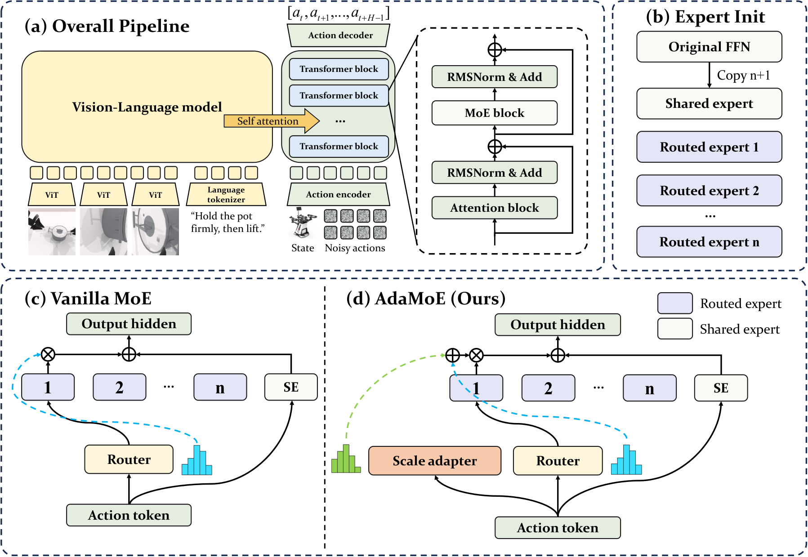
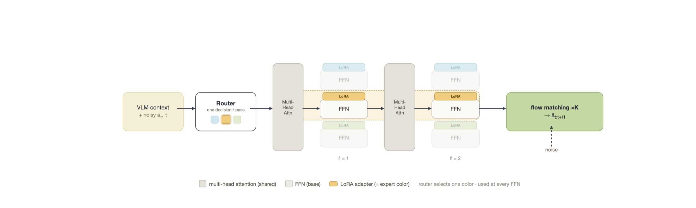
-
选人与幅度解耦及整步动作块路由：AdaMoE（图 14d）保留常驻共享专家，并在路由侧并联独立线性层
Scale adapter不受负载均衡约束，令 Router 专注均衡选出 Top- 专家、Scale adapter 自由调节合成幅度，在 19 个 RoboTwin 双臂任务上提升 9.3%，真机提升 21.5%。Compositional MoE-VLA（图 15）进一步改为整次前向传播统一路由，令整个动作块 在全部层共用同一次选出的 LoRA 专家，无需阶段标注即沿时间轴自发分化出接近抓取、空中搬运与精细对位放置等可组合原语。 - 按噪声尺度、力触觉与异构本体切分及异步 RL 防崩溃：沿物理维度切分的工作还包括按扩散噪声水平路由并预缓存权重削减 90% FLOPs 的 MoDE（ICLR 2025）、接触瞬间提升六维力矩与多指触觉权重的 ForceVLA（NeurIPS 2025）与 MoDE-VLA，以及在首尾层设置动作空间专家（AS-MoE）吸收单双臂与人形维度差异、中间层用异构均衡专家（HB-MoE）提取共享运动规律的 HiMoE-VLA（图 16）。当对此类稀疏 MoE 基座执行异步强化学习时，推训引擎数值差异会导致单次前向约 10% 的路由器激活了不同专家（图 17 红点离散偏离对角线），引发重要性比率阶跃爆炸；Rollout Routing Replay ()（ICML 2026，图 17 绿点）通过在训练前向强制重放采样期缓存的二值专家掩码并保留门控梯度，以零额外开销消除了路由跳变崩溃（平滑替代方案见 RSPO 与 ）。
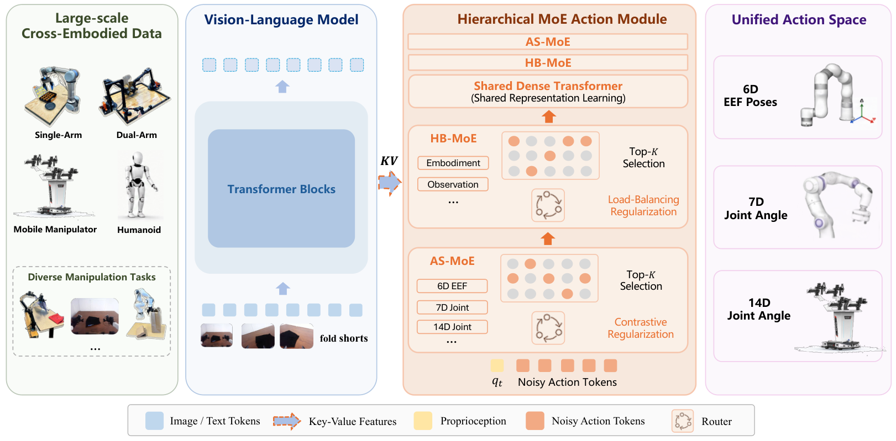
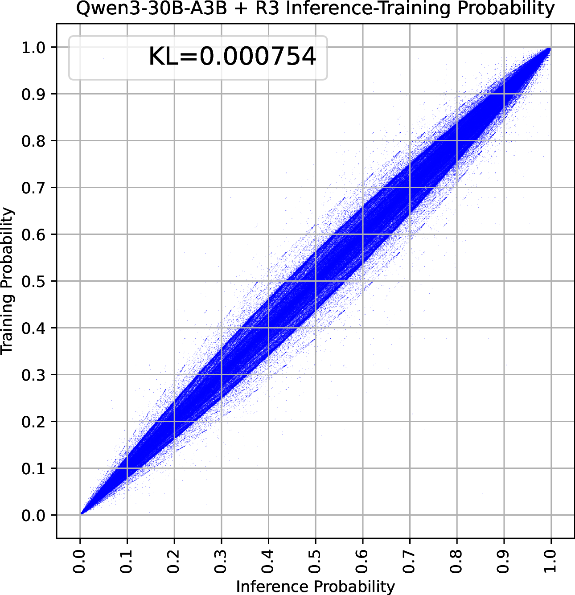
4.2 分支 B：模态级多专家统一代码规划与世界模型（AW-0, arXiv:2610.30136）
粗粒度 Mixture-of-Transformers（MoT）正在将第 0 节的三条基座主线融合进单一网络。AW-0（Agentic World Action Models）（Liu et al., 2026，图 18）在单模型内并列部署三路专家：Code Expert 经离散随机掩码去噪生成参数化技能代码 ，Video Expert 预测未来视觉潜状态 ，Action Expert 去噪输出 64 维连续动作块 。三路专家共享多模态注意力并服从下三角模态因果掩码 ，由代码规定子技能结构、引导视频专家推演接触画面、再共同约束底层动作去噪，部署期支持在解析程序执行与连续动作输出之间混合切换。
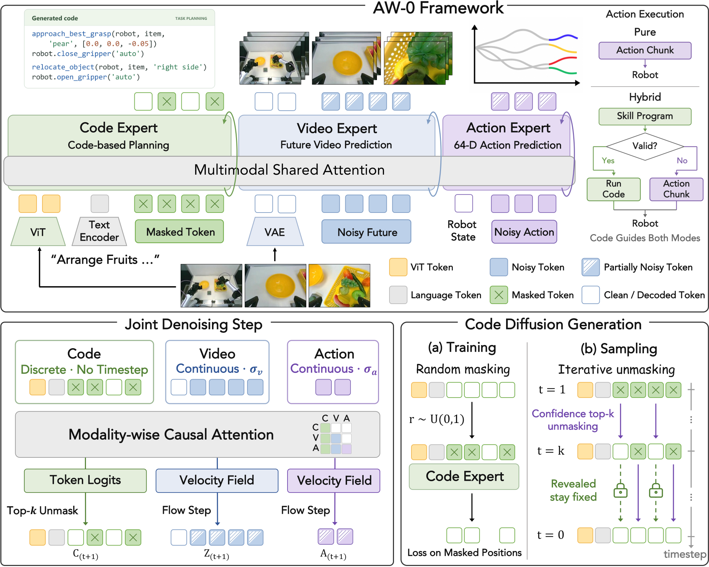
4.3 分支 C：模型外多智能体系统——单机进度中断与多机低带宽协作
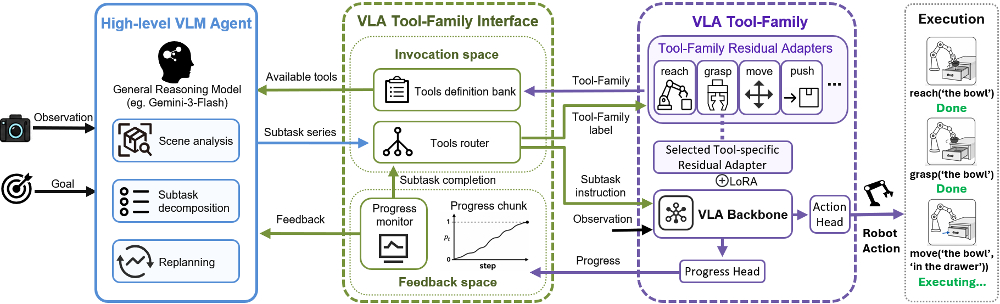
-
单机器人体内的监控与验证闭环：对比图 15 与图 19 的 VLAs-as-Tools（Lei et al., 2026），后者除在共享 VLA 上切换工具族 LoRA 外，核心增量在于独立的双向进度监控接口：辅助
Progress Head实时预测完成度 ，仅在检测到卡死停滞或阶段完成时事件触发唤醒高层 VLM 重规划，使 在 5 个长程基准上平均提升 8.9%。同属外部验证闭环的 RoboMonkey（CoRL 2025）在测试时采样多条动作候选并由反事实训练的 7B VLM Verifier 择优；Agentic Robot 与 HiRoC 分别引入时序验证器与子目标分层 RL。 - 多台物理机器人的去中心化协作：早期 RoCo 与 CoELA 让多机每步通过自然语言对话协商，但在局部视野与中小模型上易陷入无效寒暄甚至互相误导——例如 LLaMA-3.1-8B 上 CoELA 成功率 0.51 反而低于无通信单刷的 0.62。近期研究沿三条路线取代高频对话：（1）LLawCo（ICML 2026，图 20）直接从自身失败协作轨迹归纳精简合作法则 重写思维链微调，使 14B 模型在 PARTNR-Dialog 上超越 70B 零样本基线；（2）VIKI-R（NeurIPS 2025，图 21）围绕异构本体设计 L1 本体激活、L2 并行排班与 L3 空间无碰撞三级可验证奖励开展 GRPO 训练；（3）COMBO、SEER 与 CHORUS 直接通过组合视频世界模型、跨机共享潜世界记忆池或视觉观测同伴动作完成无语言对齐。
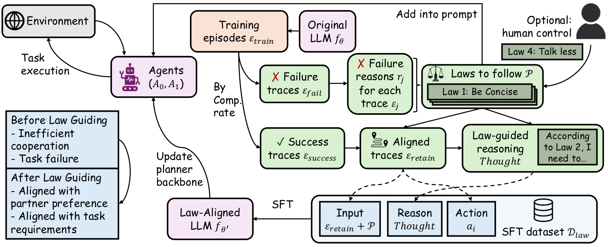
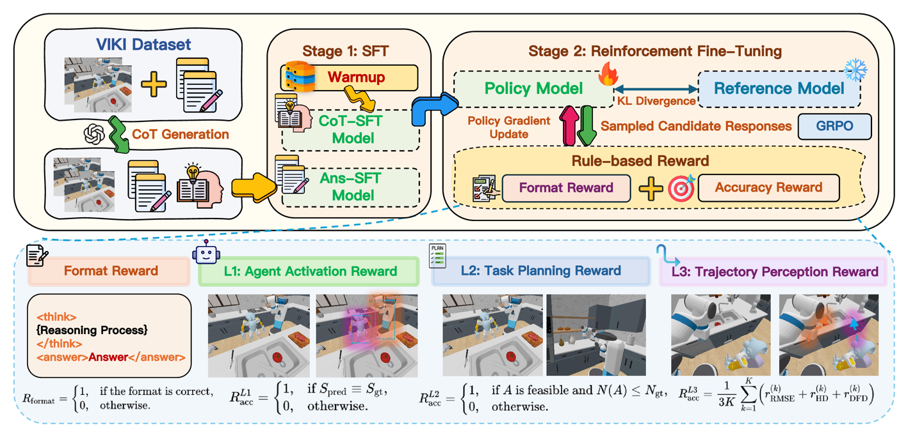
| 方法与链接 | 所属分支与粒度 | 核心架构与训练机制 | 解决的关键矛盾与局限 |
|---|---|---|---|
| AdaMoE & Compositional MoE | 模型内 50 Hz 动作块 MoE | Scale adapter 解耦均衡选人与幅度缩放；整步动作块统一路由避免帧内跳变 | 消除负载均衡对连续流匹配的干扰，无监督涌现抓取、搬运、放置分工 |
| MoDE / ForceVLA / HiMoE | 模型内多维物理路由 | 分别按去噪噪声尺度、接触六维力矩与首尾异构动作空间做条件专家路由 | MoDE 预缓存省 90% FLOPs；ForceVLA 改善盲插拔；HiMoE 消除单双臂负迁移 |
| & RSPO | MoE 异步 RL 稳定管线 | 训练前向强制重放采样期缓存的二值专家掩码，或按路由偏移平滑缩放权重 | 消除推训约 10% 专家跳变引发的重要性比率爆炸，支撑 MoE-VLA 在线强化 |
| AW-0 | 模态级三流统一 MoT | 模态因果注意力联合去噪技能代码、未来视频与 64 维动作块 | 在单网络内统一 Agentic 程序化技能复用与 WAM 物理状态前瞻 |
| VLAs-as-Tools & RoboMonkey | 单机 1 Hz 外部监控验证 | Progress Head 检测停滞触发事件重规划；7B 视觉验证器多候选打分择优 | 补齐单端到端网络缺失的跨秒级卡死中断、进度跟踪与主动回滚 |
| LLawCo / VIKI-R / SEER | 多机 0.2–2 Hz 物理协同 | 失败轨迹归纳低带宽合作规则；三级奖励 GRPO 训排班；共享潜世界池对齐视野 | 替代低效自然语言寒暄，解决局部可观测下的异构多机器人分工与防碰撞 |
5. 跨方向对比与四点技术判断
| 对比维度 | 1. 交互轨迹进化 | 2. 动态 Rubric 协同进化 | 3. 经验复用与测试时 RL | 4. MoE 与多智能体系统 |
|---|---|---|---|---|
| 核心目标 | 在闭环试错中习得偏差恢复与超演示轨迹 | 构造随策略能力演化的防刷分稠密归因信号 | 零主干梯度实现部署现场单样本即时纠偏 | 条件化分配网络容量与跨机身协作边界 |
| 直接作用变量 | 规划器权重 或流匹配速度场 | 评分准则集合 与策略权重 双演化 | 非参数记忆 、输出 Logits 或快速权重 | 路由门控 、专精专家 与跨模块监控接口 |
| 训练期算力开销 | 高，依赖并行仿真回合或真机迭代采样 | 中高，增加双组采样与准则判别开销 | 极低至零，JitRL 与 RV-ICL 免主干梯度（降本 30 倍） | 中等，在预训练稠密 VLA/WAM 上扩增稀疏专家 |
| 机载推理延迟 | 最低，经验固化于权重，零检索开销 | 最低，特权准则仅用于训练期自蒸馏 | JitRL 与 RoboTTT 恒定低延迟；多轮视频重入较高 | 模型内动作块 MoE 延迟低；多轮语言协商延迟高 |
综合四个方向的实证数据，可以提炼出四条面向后续课题选题的判断：
1. 机载中小模型存在明显的“外部记忆消化门槛”，参数内化与测试时记忆是先后依赖而非平替关系。
RPent 与 RV-ICL 在闭源旗舰模型上取得 82%–96% 成功率，但 AgenticRoboRL 的受控对照显示，未经后训练的 9B 规划器挂载同一份外部记忆仅从 18.1% 微升至 18.9%，而经去记忆蒸馏与多轮 RL 内化后的无记忆 9B 模型达到 71.0%。把外部规则或视频片段准确映射到偏移后的三维坐标上本身需要较强的推理容量，且机载集群分析（Serving Agentic Robot Fleets）表明长多模态 KV-Cache 会严重抢占毫秒级控制带宽。面向边缘部署，应先通过方向一将基础调度与恢复能力压进慢权重，再在高层离散原语层叠 JitRL 对数概率偏置、在底层叠 RoboTTT 快速权重应对现场长尾扰动。
2. 长程具身 RL 最紧缺的中间层是“锚定客观物理观测的在线演化 Rubric”。
现有具身强化学习两头脱节：高层多轮 RL 仅靠终局 0/1 奖励在十步长任务上停留在 40% 左右；具身过程奖励模型（RoboReward、Robo-Dopamine）虽引入反事实负样本与势函数防悬停差分，但在 RL 期间完全冻结，后期易出现准则饱和或相机遮挡刷分。将 CoCA 的双组能力探测、ARCO 对齐终局结果的步级分解约束与势函数差分结合，并将准则判据锚定在三维点云测距与接触力矩等物理观测上，是值得直接切入的空白点。
3. 单机多技能与世界预测正被模型内专家架构（动作块 MoE 与三流 AW-0）向内整合，显式多智能体的不可替代边界收敛至两处。
细粒度子技能分化已可在单个动作专家内部通过整步动作块路由（Compositional MoE-VLA）与幅度解耦（AdaMoE）无监督涌现，代码规划与未来视频预测也可在 AW-0 三流网络内同步去噪完成。模型外显式多智能体真正不可替代的硬边界集中在两处：独立于执行器的跨秒级卡死监控与异常回滚验证（如 VLAs-as-Tools 与 RoboMonkey），以及局部视野下的异构多机器人低带宽协同（如 LLawCo 与 SEER）。
4. 跨层联合强化与“日间即时偏置 + 夜间去记忆蒸馏”构成自然闭环。
一方面，利用 Rollout Routing Replay () 锁定推训专家掩码，配合流匹配代理似然（FPO）与关键错步自蒸馏（SCOPE），能够在不引发专家坍缩的前提下打通上层规划与底层稀疏 MoE-VLA / WAM 的联合强化。另一方面，部署日间可在原语符号层用核平滑 JitRL 实现单次失败后的零梯度纠偏，空闲期再经去记忆改写蒸馏将新跑通的高回报轨迹周期性压回模型慢权重。
From VLA and WAM to Embodied Agents: Four Paths for Post-Training and MoE Routing
Starting from reactive VLAs, world-action models (WAMs), and agentic robot harnesses, this post surveys four post-training and architectural directions from 2025 to 2026: trajectory evolution, dynamic rubric co-evolution, training-free test-time reinforcement learning, and mixture-of-experts versus multi-agent systems.
0. Three Mainstream Embodied Baselines and Their Bottlenecks
Baseline Objective: Translate semantic priors from web vision-language data, physical dynamics from human manipulation videos, and symbolic planning into closed-loop robot control.
Shared Bottleneck: Whether built on VLMs, video diffusion backbones, or multi-turn tool harnesses, policies trained solely via offline imitation or invoked frozen at zero shot suffer from compounding distribution shift over long horizons. Closing this gap requires online post-training and conditional expert routing.
Robotic manipulation backbones currently evolve along three parallel tracks, each grounded in a distinct pre-training prior with complementary limitations:
1. Reactive VLAs: Built on web image-text pre-trained VLMs, representative models include , , and OpenVLA. As shown in Fig. 1, pairs a pre-trained VLM backbone with a 300M flow-matching action expert, mapping multi-view images , language instructions , and joint states directly to future -step action chunks at roughly 50 Hz. Web vision-language pre-training provides strong open-vocabulary and spatial grounding, yet static image-text pairs do not explicitly model continuous 3D state transitions under contact or partial occlusion.
2. World-Action Models (WAMs): Grounded in large video diffusion backbones, representative works include DreamZero, WorldVLA, Fast-WAM, and Faster-WAM. As shown in Fig. 2, WAMs couple future visual frame prediction with continuous action denoising inside a Video DiT, absorbing physical contact and deformable object priors from unlabeled human videos; DreamZero more than doubles zero-shot success rates on unseen manipulation tasks compared with reactive VLAs. Two bottlenecks remain: first, explicitly denoising future video frames at every control step incurs high onboard latency, running near 7 Hz on 14B DreamZero until Fast-WAM showed that retaining video prediction during training while skipping test-time frame generation achieves a 4x speedup without accuracy loss; second, short-horizon video prediction lacks cross-stage symbolic replanning after a missed grasp.
3. Agentic Planner + Robot Harness: Representative frameworks include Harness VLA (RPent) and CaP-X. As shown in Fig. 3, frozen VLAs or WAMs are wrapped as callable primitives such as VLA_ACT alongside 3D segmentation, point-cloud back-projection, and analytical motion primitives such as MOVE_TO; a high-level VLM planner observes execution feedback at 0.5–2 Hz to sequence primitives or synthesize Python control code. This structure enables long-horizon task decomposition and failure retry, but relies on expensive proprietary frontier models and loses fine geometric detail across the symbolic interface.
Recent work from 2025 to 2026 adapts post-training and sparse routing techniques from large language models to overcome distribution shift across these three baselines, forming four directions: trajectory evolution, dynamic rubric co-evolution, experience reuse and test-time RL, and mixture-of-experts (MoE) with multi-agent systems.
1. Trajectory Evolution
Core Goal: Move beyond clean single-pass offline demonstrations so embodied policies acquire error recovery, distractor disambiguation, and shortcut behaviors through closed-loop interaction.
Shared Challenges: (1) Physical rollouts are slow, and heterogeneous robot harnesses prune visual history on the fly, creating state mismatches between inference inputs and reconstructed training transcripts; (2) terminal binary rewards provide coarse credit assignment over long multi-turn episodes; (3) continuous flow-matching policies follow deterministic ODEs without closed-form log-likelihoods for policy gradients.
Sub-branch Divergence: The high-level planner branch freezes low-level skills to optimize multi-turn tool calls and critical-step self-distillation; the low-level flow-matching branch injects stochastic noise or surrogate likelihood ratios to update 50 Hz continuous actions; the world-model imagination branch runs on-policy RL inside WAM video rollouts to cut physical sampling cost.
1.1 Representative Work: AgenticRoboRL (arXiv:2610.28589)
AgenticRoboRL (Liu et al., 2026) freezes perception and low-level VLA skills while post-training open-weight VLM planners across heterogeneous robot harnesses. Without external memory at test time, a Qwen3.5-9B planner improves from 18.1% to 71.0% on LIBERO-PRO across 800 position-swapped and instruction-perturbed episodes, matching proprietary Codex GPT-5.5 equipped with external memory at 72.1%.
-
Model-call Proxy (Fig. 4b): Different harnesses emit either JSON skill invocations or Python code and actively drop older camera frames to cap memory. AgenticRoboRL places an interception proxy at the model-serving boundary, recording exact prompt token IDs , generated tokens , and rollout log-probabilities per call; any sample whose re-rendered tokens diverge from the recorded sequence receives zero weight. Supporting a new harness requires only a thin adapter emitting task ID, initial seed, attempt index, binary outcome, and an infrastructure
validflag. - Rewrite-and-Filter SFT (Fig. 4a): A 27B teacher collects successful trajectories using external memory files, whereas the 9B student runs memory-free. Training directly on raw teacher traces causes the student to hallucinate nonexistent memory references. Removing memory tool calls and rewriting memory-dependent reasoning spans into observation-grounded deductions raises SFT success to 65.1%, outperforming turn-masking baselines at 55.2%.
- Multi-turn PPO with Leave-One-Out Group Advantage (Fig. 4c): Sampling trajectories per task-seed group eliminates the critic network, computing leave-one-out advantages (RLOO) from terminal rewards alongside truncated importance weights that correct numerical drift between serving and training backends:
Here is the current policy probability, is recomputed under the round-start weights, and is the recorded rollout probability with truncation cap . Post-training teaches the 9B planner to invoke point-cloud back-projection and compare 3D Euclidean distances to resolve identical distractors, reaching 72.2% zero-shot across 10,030 perturbed episodes on LIBERO-Plus.
1.2 Sub-branches and Related Advances
- Branch A · Critical-step Attribution and Trajectory Pruning for High-level Planners: Failed episodes often localize targets accurately in early turns, while successful episodes frequently contain redundant detours. SCOPE (Fig. 5) identifies salient error steps, synthesizing step-specific hindsight skills and applying bounded on-policy self-distillation solely at masked error turns alongside a length-contrastive reward. TrajEvolve (NeurIPS 2026) uses counterfactual environment replay to prune redundant exploration turns; GiGPO clusters recurring anchor states across rollouts for step-level credit; and VAGEN requires the VLM to predict next-step visual states under bi-level GAE.
- Branch B · Online RL for 50 Hz Continuous Flow-Matching Policies: For discrete-token VLAs, SimpleVLA-RL (ICLR 2026) and RLinf-VLA (RSS 2026) overlap rendering, rollout, and gradient updates to scale online GRPO, discovering non-demonstrated push-cut shortcuts from binary rewards alone. For deterministic flow-matching ODEs lacking tractable likelihoods, three solutions have emerged: (1) ReinFlow (NeurIPS 2025, Fig. 6) and Flow-GRPO attach a state-conditioned noise network to convert ODE steps into Gaussian Markov transitions with exact log-likelihoods for PPO, removing the noise net at deployment; (2) FPO and FPO++ preserve deterministic sampling and form a surrogate probability ratio from conditional flow-matching loss differences ; (3) (RECAP) estimates step advantages via a distributional value critic and conditions flow-matching regression on binary improvement indicators , halving real-world failure rates on espresso making and box folding.
- Branch C · Imagined Rollouts inside WAMs and World Models: WMPO aligns a pixel-level world model with policy visual features so VLAs can run on-policy GRPO inside imagined video trajectories, while DreamPlan similarly replaces physics simulators with video world models to fine-tune visual planners.
| Method | Sub-branch | Key Technical Modification | Empirical Gains & Limits |
|---|---|---|---|
| AgenticRoboRL | High-level 9B planner | Serving-boundary proxy for exact prompts; memory-free rewrite SFT + RLOO PPO | LIBERO-PRO 18.1% 71.0%; 10-stage tasks still bottlenecked by binary rewards |
| SCOPE & TrajEvolve | Multi-turn planner traces | SCOPE masks critical error steps for bounded self-distillation; TrajEvolve prunes detours | Prevents global hindsight bias on clean turns and shortens interaction horizon |
| SimpleVLA-RL & RLinf-VLA | Low-level VLA online RL | Pipelined rendering-inference-training execution for large-scale online GRPO | Over 2x throughput gain; discovers non-demonstrated push-cut trajectories |
| ReinFlow & FPO | Continuous flow matching | ReinFlow injects learnable Gaussian noise; FPO builds surrogate ratios from CFM loss deltas | Resolves intractable log-likelihoods in deterministic flow-matching policies |
| (RECAP) | Real-robot flow policy | Distributional critic maps step advantages to binary indicators for iterative regression | Scales reliably on physical hardware, halving failure rates on dexterous chores |
| WMPO & DreamPlan | World-model rollouts | Runs on-policy GRPO inside future video rollouts predicted by pixel world models | Cuts hardware wear and simulator cost; bounded by long-horizon video fidelity |
2. Dynamic Rubric & Process Reward Co-evolution
Core Goal: Construct dense intermediate credit signals that co-evolve with policy capability, preventing zero-variance gradient starvation on long tasks while blocking reward hacking against static evaluators.
Shared Challenges: (1) Difficulty mismatch and saturation—fixed criteria yield all-zero scores early on and saturate at full marks once mastered, collapsing within-group variance; (2) multimodal reward hacking—robot arms hover indefinitely above targets or exploit camera occlusions to farm visual progress scores; (3) step-level human annotations are unavailable at scale.
Sub-branch Divergence: The online rubric co-evolution branch probes criterion saturation, enforces terminal sum decomposition, and mines adversarial loopholes in closed loop; the embodied progress-shaping branch introduces potential-based differences and counterfactual visual negatives, but remains frozen after offline pre-training.
2.1 Representative Work: CoCA (arXiv:2610.38566)
In AgenticRoboRL, short-horizon suites reach 86%–96%, whereas 10-stage LIBERO-10 stalls near 40% and CaP-X Spatial stays below 6%: when every rollout in a group fails (), group advantages vanish. CoCA (Co-Evolving Policy and Rubric via Capability Awareness) (Zhang et al., 2026) couples criterion-level difficulty calibration with policy updates in an online loop (Fig. 7).
-
Capability Probing via Dual-Group Rollouts (Fig. 7a): Given query and weighted criteria , the policy samples an unguided group and a rubric-guided group . Comparing pass rates isolates each criterion's status: marks
Saturateditems with zero variance; marksToo-Harditems beyond reach; and identifiesLearnablefrontier skills that fail unguided but succeed with explicit rubric guidance. -
Dynamic Calibration and Frontier Self-Distillation (Fig. 7b–d): A rewriter tightens
Saturatedcriteria and decomposesToo-Hardones. OnLearnablefrontier items, the shared model acts as both privileged self-teacher conditioned on and unguided student, minimizing token-level forward KL divergence along student-sampled prefixes :
2.2 Sub-branches and Embodied Process Reward Comparison
- Branch A · Terminal Decomposition Consistency and Anti-Hacking Rubrics: To eliminate manual step labels, ARCO (Fig. 8) attaches rubric-generation and step-scoring heads to a shared backbone and enforces a trajectory decomposition constraint , aligning summed step scores directly with terminal environment outcomes . EvoRubrics (EMNLP 2026) and OnlineRubrics contrast current and prior policy traces each round to append penalty clauses against newly discovered shortcuts; RLCER co-evolves self-generated rubrics for reasoning; and ARISE-RL anchors criteria on returned tool observations.
- Branch B · Embodied Visual Progress Shaping and Static Freeze Limits: Recent embodied reward models include Robo-Dopamine / 2.0 (CVPR 2026, Fig. 9), RoboReward, Robometer, and ProcVLM. Robo-Dopamine observes that summing raw progress incentivizes the gripper to hover above the target without releasing, and resolves this via policy-invariant potential-based shaping ; RoboReward synthesizes near-miss counterfactual negatives to train 4B/8B visual judges on a 1–5 discrete scale. Yet all existing embodied PRMs stay frozen throughout RL, leaving an open gap for online rubric co-evolution.
| Method | Sub-branch | Core Constraint & Training Mechanism | Resolved Bottleneck & Remaining Gap |
|---|---|---|---|
| CoCA | Online rubric calibration | Dual-group pass-rate probing to recalibrate criterion difficulty + frontier self-distillation | Prevents early zero-reward stalls and late rubric saturation; text-only so far |
| ARCO & EvoRubrics | Online sum & anti-hacking | ARCO constrains step-score sum to terminal ; EvoRubrics mines new failure loopholes | Eliminates manual step labels and patches emergent reward hacking online |
| Robo-Dopamine / 2.0 | Static embodied shaping | Multi-perspective progress prediction + potential difference | Removes hovering incentives theoretically, but PRM weights remain frozen during RL |
| RoboReward & Robometer | Cross-embodiment visual PRM | Counterfactual video relabeling and cross-trajectory failure preference comparisons | Strong cross-robot transfer; coarse static scales miss fine assembly failure modes |
3. Experience Reuse & Test-Time Reinforcement Learning
Core Goal: Adapt action distributions on the fly from a handful of deployment successes or failures without backpropagating gradients through backbone weights.
Shared Challenges: (1) Appending raw text reflections or long video histories bloats multimodal KV-caches, slowing control loops and introducing verbal hallucinations; (2) static cosine-similarity retrieval often surfaces trajectories that do not improve task return; (3) symbolic high-level planners and 50 Hz continuous controllers require fundamentally different memory representations.
Sub-branch Divergence: The closed-form logit modulation branch shifts output logits directly via nearest-neighbor return advantages at zero prompt growth; the hierarchical multimodal & return-aligned retrieval branch selectively re-enters 20-frame contact clips or trains a soft-Q retriever; the recurrent fast-weight branch compresses thousands of continuous control steps into lightweight MLP weights updated per step.
3.1 Representative Work: JitRL (arXiv:2601.18510, ICML 2026 Spotlight)
JitRL (Just-In-Time Reinforcement Learning) (Li et al., 2026) bypasses parameter backpropagation altogether, turning a growing non-parametric experience store directly into closed-form test-time logit shifts (Fig. 10).
- Structured State Abstraction and Step-Return Memory (Fig. 10 bottom): After each rollout, an evaluator assigns step credit , computes discounted returns , and stores denoised state-action-return triples in memory .
- Nearest-Neighbor Advantage and Closed-Form KL-Regularized Logit Shift (Fig. 10 top): At state , retrieving Top- neighbors yields baseline and action value , defining empirical advantage . Solving the KL-regularized policy objective against the frozen prior reduces to an exact additive shift in logit space:
Without updating backbone parameters or lengthening prompts, JitRL overrides the frozen prior's losing default action in favor of , reaching 60.0% online adaptation success on WebArena-Lite—surpassing Llama-3.1-70B parameter-tuned WebRL at 46.1% while cutting compute cost by over 30x.
3.2 Sub-branches and Embodied Multi-Scale Memory
-
Branch A · Hierarchical Text Memory and On-Demand Video Tree Re-entry: Harness VLA (RPent) maintains global heuristics, task-family notes, and task-specific recipes to reach 82.4% on LIBERO-PRO with frontier VLMs, while Don't Drop the Baton records spatial handoff boundary conditions between adjacent subtasks. Because text logs lose 3D approach angles and gripper timing, RV-ICL (Fig. 11) indexes a single unlabeled demonstration video into a four-level tree: the planner reads compact summaries initially and triggers a
re-entercall to inspect 20-frame contact clips right before fine manipulation, pushing frontier-model success on LIBERO-PRO to 96.5%.
re-enter loop before contact execution.
- Branch B · Return-Aligned Neural Case Retrieval and High-Value Replay: Memento (Fig. 12) freezes the LLM planner and trains a lightweight case-retrieval policy online via soft Q-learning from environment rewards; Training-Free GRPO iteratively distills natural-language experience priors for black-box APIs; and during parametric RL training, ExGRPO (ICLR 2026) replays medium-difficulty, low-entropy rollouts to cut sampling cost by roughly 40%.
- Branch C · Recurrent Fast Weights for 50 Hz Continuous Policies: High-frequency action chunks cannot rely on discrete action matching or thousand-frame attention caches. RoboTTT (Fig. 13) offloads cross-step history into a two-layer GeLU MLP fast-weight module: with backbone weights frozen at deployment, internal weights update at every control step via self-supervised residual gradients , compressing 8,000-step non-Markovian histories at constant per-step latency alongside few-shot retrieval methods such as RICL.
| Method | Sub-branch | Test-Time Intervention | Primary Gain & Embodied Constraint |
|---|---|---|---|
| JitRL | Closed-form logit shift | Estimates nearest-neighbor advantage to shift logits via | Over 30x cheaper than RL fine-tuning at zero prompt growth; requires discrete primitive tokens |
| RPent & RV-ICL | Hierarchical text & video tree | Planner retrieves 3-tier text rules or 20-frame contact video segments on demand | Preserves 3D contact geometry (82%–96% with frontier VLMs); un-tuned 9B planners fail to digest it |
| Memento & TF-GRPO | Return-aligned case retrieval | Soft-Q retriever selects high-return cases or injects distilled verbal priors | Compatible with black-box APIs and aligned with task rewards; prompt concatenation adds latency |
| RoboTTT & RICL | Low-level fast weights | Updates a 2-layer MLP fast-weight state per step inside the 50 Hz controller | Constant-latency memory over 8,000 steps; requires fast-weight integration during training |
4. Mixture-of-Experts (MoE) & Embodied Multi-Agent Systems
Core Goal: Under unified conditional routing , scale a single embodied system across dozens of conflicting contact skills, force-tactile signals, heterogeneous robot morphologies, and multi-robot teams without cross-task gradient interference.
Shared Challenges: (1) Discrete routing versus continuous control—load-balancing losses flatten expert weights and distort action magnitudes, per-token routing causes millisecond jitter, and rollout-training numerical drift flips ~10% of Top- router decisions during async RL; (2) partition boundary trade-offs—intra-model latent routing avoids language bottlenecks but lacks multi-second stall interrupts, whereas inter-agent dialogue enables explicit verification at high latency.
Sub-branch Divergence: The intra-model fine-grained MoE branch routes whole action chunks, force signals, or embodiments at 50 Hz paired with routing replay for RL; the modality-level MoT branch (AW-0) causally couples code, video world modeling, and action denoising in one network; the external multi-agent branch handles stall-triggered replanning and low-bandwidth multi-robot coordination.
4.1 Branch A: Intra-Model MoE & RL Routing Stability (AdaMoE · Compositional MoE · )
Replacing dense FFNs inside 's action expert directly with standard LLM Top- MoE degrades continuous control for two reasons: load-balancing losses push mean router probabilities toward uniform , dampening dominant velocity fields during contact; meanwhile, independent per-token routing switches experts erratically within a single action chunk.
-
Magnitude Decoupling and Whole-Chunk Routing: AdaMoE (Fig. 14d) pairs a shared expert with a parallel linear
Scale adapterexcluded from , letting the router balance expert utilization while the adapter scales velocity magnitudes freely—improving 19 bimanual RoboTwin tasks by 9.3% and physical robot tasks by 21.5%. Compositional MoE-VLA (Fig. 15) switches to whole-forward-pass routing so the entire chunk shares one selected LoRA expert across all layers, causing experts to specialize without stage labels into approach-grasp, transport, and precision placement primitives. - Noise-Level, Force-Tactile, Cross-Embodiment Routing & Async RL Replay: Complementary routing designs partition experts by diffusion noise scale with weight pre-caching to cut 90% FLOPs in MoDE (ICLR 2025), up-weight 6-axis force/torque and tactile streams upon contact in ForceVLA (NeurIPS 2025) and MoDE-VLA, or place Action-Space MoEs at boundary layers for single-arm, bimanual, and humanoid morphologies around shared middle layers in HiMoE-VLA (Fig. 16). When applying async RL to sparse MoEs, serving-training numerical discrepancies flip roughly 10% of discrete Top- router choices per pass (Fig. 17 red scatter), blowing up importance ratios; Rollout Routing Replay () (ICML 2026, Fig. 17 green scatter) replays cached rollout expert masks during gradient passes while preserving router gradients, eliminating routing drift at zero compute overhead alongside soft reweighting in RSPO and .
4.2 Branch B: Modality-Level Tri-Stream Unification (AW-0, arXiv:2610.30136)
Coarse-grained Mixture-of-Transformers (MoT) merges all three Section 0 baselines into one model. AW-0 (Agentic World Action Models) (Liu et al., 2026, Fig. 18) runs three parallel experts: a Code Expert generating parameterized skill programs via discrete masked denoising, a Video Expert predicting future latent frames , and an Action Expert denoising 64-D action chunks . Governed by a block-causal attention mask , symbolic code structures visual foresight, which in turn guides continuous action generation, supporting hybrid switching between analytical code execution and neural control.
4.3 Branch C: External Multi-Agent Systems — Progress Interrupts & Low-Bandwidth Teams
-
Intra-Robot Progress Monitoring & Verification: Comparing Fig. 15 with VLAs-as-Tools (Fig. 19), the latter adds an explicit bidirectional monitoring interface: an auxiliary
Progress Headtracks completion and wakes the VLM planner only when progress stalls or a subtask finishes, lifting by 8.9% across five long-horizon benchmarks. Similarly, RoboMonkey (CoRL 2025) scores multiple sampled VLA action candidates at test time with a counterfactual-trained 7B VLM verifier, while Agentic Robot and HiRoC add temporal verifiers and subgoal-aligned hierarchical RL. - Decentralized Multi-Robot Coordination: Early dialogue frameworks such as RoCo and CoELA converse in natural language every step, which degrades under partial observability on smaller models—on LLaMA-3.1-8B, CoELA scores 0.51, below no-communication execution at 0.62. Recent work eliminates verbose chatter via three routes: (1) LLawCo (ICML 2026, Fig. 20) distills concise cooperation laws from failed team episodes and internalizes them via rewritten-chain SFT so a 14B model outperforms 70B zero-shot baselines; (2) VIKI-R (NeurIPS 2025, Fig. 21) trains a visual multi-robot planner via GRPO under three-level rewards covering agent activation, parallel scheduling, and collision-free paths; (3) COMBO, SEER, and CHORUS coordinate directly through compositional video world models, shared latent world memory pools, or visual observation of partner arms without language messages.
| Method | Branch & Granularity | Core Architecture & Training Mechanism | Resolved Trade-off & Scope |
|---|---|---|---|
| AdaMoE & Compositional MoE | Intra-model 50 Hz chunk MoE | Scale adapter decouples selection from amplitude; whole-pass routing prevents intra-chunk jitter | Removes load-balance distortion on flow matching and induces grasp/move/place primitives |
| MoDE / ForceVLA / HiMoE | Intra-model physical routing | Routes experts by noise scale, 6-axis contact force/torque, or boundary action spaces | MoDE cuts 90% FLOPs; ForceVLA aids contact-rich insertion; HiMoE curbs cross-robot interference |
| & RSPO | Async MoE-RL stabilization | Replays cached rollout routing masks during training passes or smoothly scales router drift | Prevents ~10% expert-flip ratio explosion when scaling online RL on sparse MoE-VLAs |
| AW-0 | Tri-stream modality MoT | causal attention jointly denoising skill code, video latents, and 64-D actions | Unifies programmatic skill composition and WAM visual foresight inside a single model |
| VLAs-as-Tools & RoboMonkey | 1 Hz intra-robot verification | Progress Head triggers stall-driven replanning; 7B visual verifier ranks sampled action candidates | Adds multi-second stall detection and active rollback absent in monolithic policies |
| LLawCo / VIKI-R / SEER | 0.2–2 Hz multi-robot teams | Failure-induced cooperation rules; 3-tier GRPO scheduling; shared latent world memory pools | Replaces verbose dialogue for partially observed, collision-free heterogeneous robot teams |
5. Cross-Direction Comparison & Four Takeaways
| Dimension | 1. Trajectory Evolution | 2. Dynamic Rubric Co-evolution | 3. Experience & Test-Time RL | 4. MoE & Multi-Agent |
|---|---|---|---|---|
| Core Objective | Acquire error recovery and shortcuts via closed-loop trial | Co-evolve non-saturating, anti-hacking process credit | Adapt at deployment from single failures with zero backbone gradients | Partition network capacity and multi-robot coordination boundaries |
| Modified Variable | Planner weights or velocity field | Criterion set jointly with policy weights | Memory store , output logits , or fast weights | Router gates , experts , and monitoring interfaces |
| Training Compute | High, requiring parallel simulator or hardware rollouts | Medium-high due to dual-group rollouts and rubric judging | Near zero; JitRL and RV-ICL cut RL fine-tuning cost by 30x | Moderate when expanding sparse experts on pre-trained VLA/WAMs |
| Onboard Latency | Lowest; skills compiled into weights with zero retrieval | Lowest; privileged rubrics distilled away before deployment | Constant low latency for JitRL and RoboTTT; higher for video re-entry | Low for whole-chunk MoE; high for multi-turn verbal negotiation |
Comparing empirical findings across all four directions highlights four practical takeaways for new research proposals:
1. Compact onboard models face a sharp memory-digestion threshold: parametric post-training must precede test-time memory.
While RPent and RV-ICL reach 82%–96% with proprietary frontier models, controlled ablations in AgenticRoboRL show that attaching the exact same external memory lifts an un-tuned 9B planner only from 18.1% to 18.9%, whereas memory-free rewrite distillation plus multi-turn RL reaches 71.0%. Translating retrieved rules or video clips onto shifted 3D coordinates demands substantial reasoning capacity, and fleet serving analyses (Serving Agentic Robot Fleets) confirm that long multimodal KV-caches starve millisecond control loops. Edge deployments should internalize core planning and recovery into slow weights first, then layer JitRL logit shifts at the symbolic level and RoboTTT fast weights at 50 Hz for site-specific drift.
2. The missing middle layer in long-horizon embodied RL is an online co-evolving rubric grounded in physical measurements.
Current embodied RL remains disconnected at the middle: high-level multi-turn RL stalls around 40% on 10-stage tasks under binary terminal rewards, whereas embodied process reward models (RoboReward, Robo-Dopamine) stay frozen during RL and remain vulnerable to late-stage saturation or camera-angle exploits. Combining CoCA's dual-group capability probing and ARCO's terminal sum constraint with potential-based shaping—while anchoring criteria on 3D point-cloud distances and contact wrench signals—offers a direct research opening.
3. Single-robot skill specialization and visual foresight are converging inside unified expert backbones, narrowing external multi-agent systems to two essential roles.
Fine-grained skill partitioning already emerges without supervision via whole-chunk routing (Compositional MoE-VLA) and magnitude decoupling (AdaMoE), while symbolic code planning and video dynamics co-denoise inside tri-stream AW-0. External multi-agent architectures retain clear necessity in two places: independent multi-second stall monitoring and rollback verifiers (VLAs-as-Tools, RoboMonkey), and partially observed heterogeneous multi-robot coordination (LLawCo, SEER).
4. Cross-level MoE-RL and a day-night adaptation loop naturally connect all four directions.
Pairing Rollout Routing Replay () with surrogate flow-matching ratios (FPO) and critical-step self-distillation (SCOPE) enables joint post-training across planners and sparse MoE-VLA/WAM backbones without router collapse. At deployment, kernel-smoothed JitRL provides zero-gradient daytime adaptation after single failures, while memory-free rewrite distillation periodically consolidates high-return daytime traces back into slow weights offline.